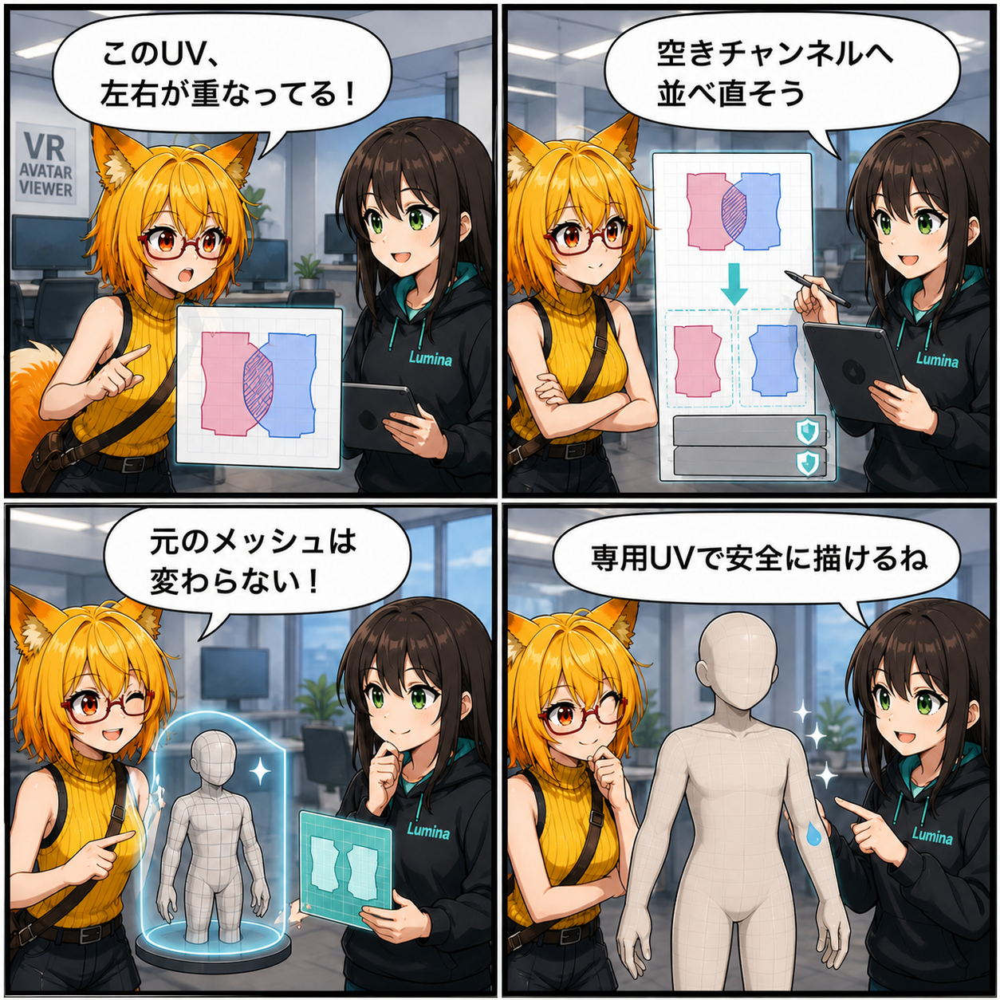

重なったUVをほどいて、濡れのキャンバスを自動でつくる
2026-08-13 の開発日記では、Surface Paint用に安全な既存UVが見つからないモデルへ、専用UVを自動生成する進行中の改善を取り上げます。左右対称のために同じ場所へ重ねたUV島などを、元Meshや既存UVへ書き込まず、空いているUV Channelへ収まる別データとして組み立てる仕組みです。
main ブランチでは集計期間内のコミットは0件でした。一方、期間内の更新時刻を持つ未コミット差分について、実装ソースと追加テストから内容を確認できたため、この記事では「進行中の実装」として扱います。4コマ内の会話や見せ方には読み物としての演出があります。集計期間は 2026-08-12 03:00:00 JST から 2026-08-13 02:59:59 JST までです。
集計終了時点の最終HEADは b6403ee（「残存するシーン設定とネイティブプラグインを追加」）で、対象コミットは 0件 でした。確認時点のViewer作業ツリーにはSurface Wetness／Surface Paint関連を中心とする未コミット差分があり、主要ファイルの更新時刻は集計期間内の 2026-08-12 10:06〜17:45 JST です。この記事は、その中からソースで確認できた自動Paint UV生成に主題を限定しています。
今日の主題：安全なUVがなければ、専用のキャンバスをつくる
前日の実装では、UV0〜UV7を調べ、表面へのPaintに安全な既存Channelだけを選ぶ基盤を整えました。ただし、一般的なアバターでは左右のパーツが同じTexture領域を共有するため、UV島が鏡写しで重なっていることがあります。その状態で片側へ水滴を描くと、反対側にも同じ模様が出るため、局所的な濡れ表現には使えません。
今回追加された SurfacePaintUvGenerator は、入力Meshの頂点とTriangle構造を変えず、すでに分離されているUV島を重ならない領域へ再配置します。格納先には未使用のUV Channelだけを選び、元のUVやほかの用途で使われているChannelを上書きしません。
元Meshへ書かず、Sidecarとして運ぶ
生成したUVは元Meshへ直接設定せず、Surface Paint用のSidecarデータとして構築します。SurfacePaintDocumentBuilder は安全な既存UVを優先し、見つからない場合だけ生成Fallbackへ進みます。生成元、Generator ID、Version、頂点数などの情報もBindingへ記録されるため、読込側は空いているRuntime UV Channelへ復元できます。
テストには、鏡像UV島を分離できること、生成前後で元UVが変わらないこと、使用中Channelを上書きしないこと、安全な既存UVがある場合はそちらを優先すること、SidecarからRuntime Meshへ復元できることが追加されています。
頂点分割が必要なMeshにも、外部Converterで対応する
既存の頂点構造を保ったままでは重なりを解消できない肌Mesh向けには、外部VAB Converter専用のもう一段のFallbackも追加されています。入力Meshを複製し、複製側だけでUnity EditorのSecondary UV unwrapを実行して、VABを書き出している間だけRendererへ一時的に割り当てます。
処理後は必ず元Meshへ戻す設計で、入力Prefab、Scene、Mesh Assetを変更しません。VAB 4.6の検証テストには、生成UV7をSidecarへ保存するケースと、頂点分割を伴うTopology Cloneを使っても元Meshを復元するケースが加わっています。
同じ期間に進んだこと
同じ未コミット差分では、Surface WetnessのRuntime制御、汗表現、Preset、UI、Play Mode検証メニュー、Visual Regressionテストも更新されています。ただし、コミットとして確定した実績ではないため、この記事では詳細を広げず、自動Paint UV生成と非破壊な書き出し経路に焦点を当てました。
4コマの裏話
4コマでは、ろひが左右で重なったUVに気づき、ルミナが空きChannelへUV島を並べ直します。元Meshが変わっていないことを確認したあと、専用UVなら片側だけへ安全に濡れを描ける、という順で実装の狙いを表しました。
今日のまとめ
安全な既存UVがないモデルをすぐGlobal-onlyへ退避させるだけでなく、元データを傷つけない条件を守りながら、局所Paintのための専用UVを用意する道ができました。既存UV優先、空きChannel限定、Sidecar保存、必要時だけのTopology Cloneという段階的なFallbackです。
まだ未コミットの進行中実装ですが、対応できるモデルを広げるための境界と、その非破壊性を確かめるテストが具体化した一日でした。
本日のひとこと： 重なりはほどく。元データには触れない。